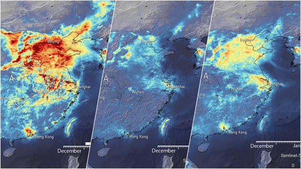

La reduccion de gases de efecto invernadero o la disminución del tráfico ilegal de fauna salvaje son algunos de los ejemplo que pueden contabilizarse de los beneficios que está dejando la pandemia del coranovirus a la está enfrentando el mundo actualmente para el medio ambiente.
El coranovirus es un problema de salud y de segjuridad humana grave,pero, a medida que las personas,empresas y Gobiernos están cambiando sus comportamientos y patrones cotidianos para cobntener ( o evitar) el virus,también se han producido efectos en el medio ambiente que están siendo inesperadamente beneficiosos.
El ´Frenaso´ al que industrias o paises desqarrollados opotencias mundiales como China o Estados Unidos se han visto obligadas como consecuencia de la pandemia, la redución en el número y frecuencias de la pandemia, la reducción en el número y frecuencia de los vuelos entre muchos destinos en todo el mundo, o la suspensíon de grandes concentraciones y eventos deportivos,sociales y culturales,así como las precauciones a las que estan sometiendo a los ciudadanos en sus movimientos particulares, está trayendo como consecuencia una clara bajada en el nivel de emisiones de gases contaminantes.
Bien y ahora que hacemos ,creo que ha sido la pregunta que nos hemos realizado más de un ser un humano que ama la naturaleza, sus paisajes y sus sonidos , y admira su gran belleza creo que ha llegado el momento de cambiar de chips se subsistir con las demás especies que habitan este planeta
<<Recuperacion>Crees que es momento para un cambio<Recuperacion>La tierra nos pide a gritos que la salvemos pero solo depende del ser humano el rumbo que le queramos dar<Recuperacion>Debemos darnos cuenta del error tan grave que es depender la economia mundial del petroleo ,nos sirvio de leccion, de reflexion , también nos dimos cuenta de la importancia de la familia por encima del dinero